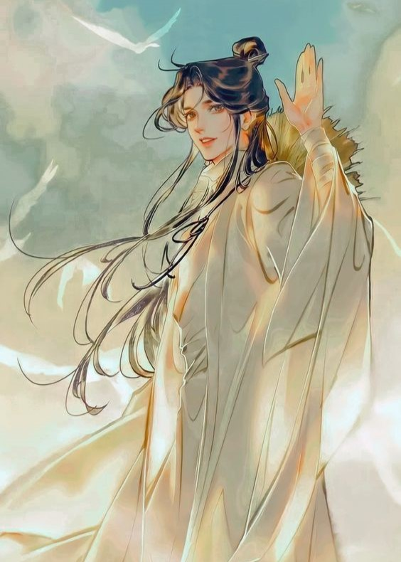
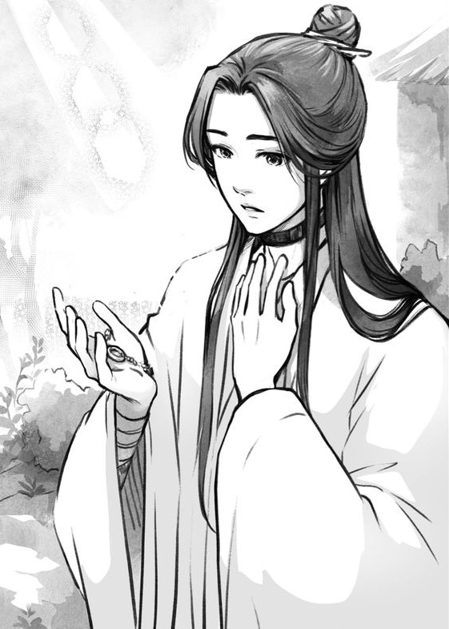
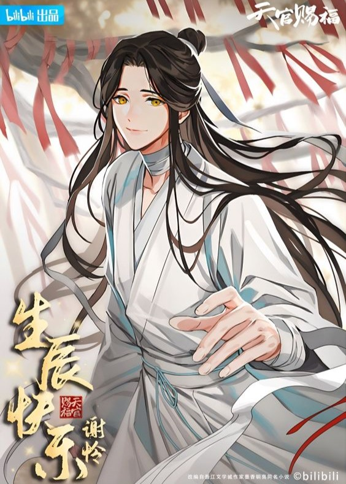
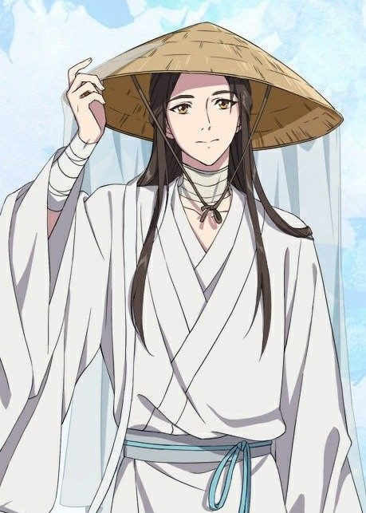

Xie Lian
"Body in abyss, heart in paradise."
Manhua

Novel

Official Art

Donghua

Audio Drama

| Species |
God Human (former) |
| Status | Alive |
| Affiliation |
Heavenly Court Yong'an Kingdom (former) Xianle Kingdom (former) |
| Age | 800+ |
| Birthday | July 15 |
| Birthplace | Xianle |
| Height | 178cm |
| Relatives |
Hua Cheng (Husband) Qi Rong (Cousin) King of Xianle (Father) Queen of Xianle (Mother) |
| Weapon |
Ruoye Fang Xin |
Abilities
- High Pain Tolerance: Due to the number of torture, battles, and pain he suffered, he has an extremely high tolerance for pain. Even while being in the mortal realm, he could go for days without food or water, and he didn't notice when he got frostbites even when those wounds had started bleeding.
- High Danger Sense: He has an uncanny ability to sense danger and has proven to be correct in his intuition a lot.
- Swordsmanship Skills: Xie Lian has always been obsessed with weaponry and swordsmanship, which he is and was greatly skilled in himself ever since he was young.
- Intelligence: He has proven to be one of the most intelligent characters, managing to figure out mysteries and motivations of other characters and trick even Ling Wen into revealing her crimes. He has also used this to be able to see through people's illusions and disguises by seeing flaws in their personality or appearance to distinguish them from the original, such as he did with Feng Xin's and Mu Qing's disguises.
- Immortality: The Cursed Shackle on his neck seals his age and flesh, granting him immortality as he could neither die of injury nor age.
- Physical Strength: Being a Martial God he has exceedingly great strength and overall physical abilities.
- Agility: He is capable of running great speeds and also jumping high distances.
- Spiritual Powers: He regains spiritual powers after having his Cursed Shackles broken, granting him an incredible amount of power and the ability to utilize it like other gods do.
- Multilingual: Jun Wu implanted in him the ability to understand the emotions and language of the Wuyong tongue when spoken by the Wuyong people, though when Hua Cheng reiterated the same words he couldn't understand him. Having settled in Banyue kingdom for a period of time, he is also capable of understanding and speaking Banyuenese.
- Calligraphy: Having been taught calligraphy by some of the best teachers as a child, he has skilled and beautiful handwriting.
Weapons
- Ruoye: Xie Lian is seen using a type of silk bandage called Ruoye. These bandages wrap around his hands and arms and are normally covered by his sleeves. While dormant, they can pass as normal bandages. When Xie Lian comes into contant with danger, the silk seems to have the ability to act on its own, as a sort of automatic defense. It can also be controlled manually when given a direct instruction by Xie Lian.
- Fang Xin: Fang Xin is the sworld wielded by Xie Lian. It is described as being "long and slender... The sword was dark like black jade, deep and foreboding, smoother than a mirror, and if anyone were to go near, they could see their own reflection in the blade. Only the thin, silver-white line of the heart of the sword cut across the blade in half."
Weaknesses
- Cooking Skills: His cooking skills are so bad that he has actually managed to weaponize it. His cooking has even caused the likes of gods such as Pei Xiu, Quan Yizhen, Ling Wen, Shi Qingxuan and two of the four calamities, Qi Rong and He Xuan to faint upon eating them. Hua Cheng is the only person able to eat his cooking.
- Bad Fortune: Due to his second fall from heaven and a Cursed Shackle on his neck and ankle, he suffers from having a lousy fortune. It is the main reason he frequently lost jobs, such as lightning would strike him or some accident would occur wherever he appeared.